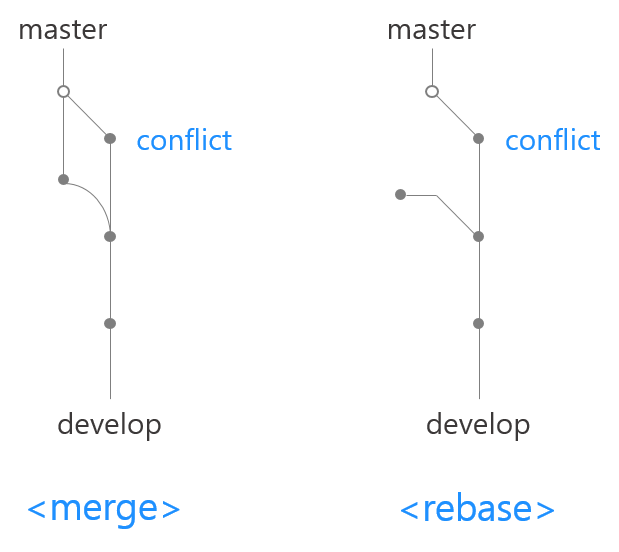

👔 Git Bash 에러 👔
👕 개요
Git Bash 에러가 발생했을 때 해결하는 방법에 대해 알아봅시다.
👢 merge 충돌
- merge conflict 해결방법
- merge 하다가 브랜치끼리 충돌하는 경우, 먼저 파일을 연다.
- 꺽쇠기호로 둘러쌓인 출돌 발생지점으로 이동한다.
- 해당 부분을 정상으로 수정하고 git add와 git commit을 진행한다.
- 에디터 창을 끄고 git merge로 병합한다.
- merge conflict 다른 해결방법
- merge 하다가 브랜치끼리 충돌하는 경우, 먼저 파일을 연다.
- 꺽쇠기호로 둘러쌓인 출돌 발생지점으로 이동한다.
- 해당 부분을 정상으로 수정하고 git add 한다.
- git commit 하지않고, git rebase --continue 브랜치명을 입력한다.
- git rebase를 하면 중단된 rebase가 이어진다.
- git merge와 git rebase의 차이
- git merge는 직관적이다.
- git rebase는 로그가 깔끔해진다.
-

👖 cannot stat '파일경로' : Permission denied 에러
- cannot stat '파일경로' : Permission denied 에러
- Atom(또는 사용중인 IDE, 에디터)를 실행한 상태에서 git merge를 하면 나타나는 허가 거부 에러
- '에디터를 종료'하고 git merge 명령하면 허가 거부 에러없이 마무리된다.
👋 failed to push some refs to '폴더/파일명'
- failed to push some refs to '폴더/파일명'
- 로컬과 remote의 버전이 다른 상태에서 push할 때 발생하는 에러
- github에서 readme를 작성하거나, remote에 내가 받지 않은 파일의 변경사항이 있는데 그걸 무시하고 내 파일을 remote에 올리면 remote에 있는 변경사항이 없어지게 되므로 git에서 push를 막는다.
- 'pull'한 뒤에 push하면 된다. (git pull origin master)